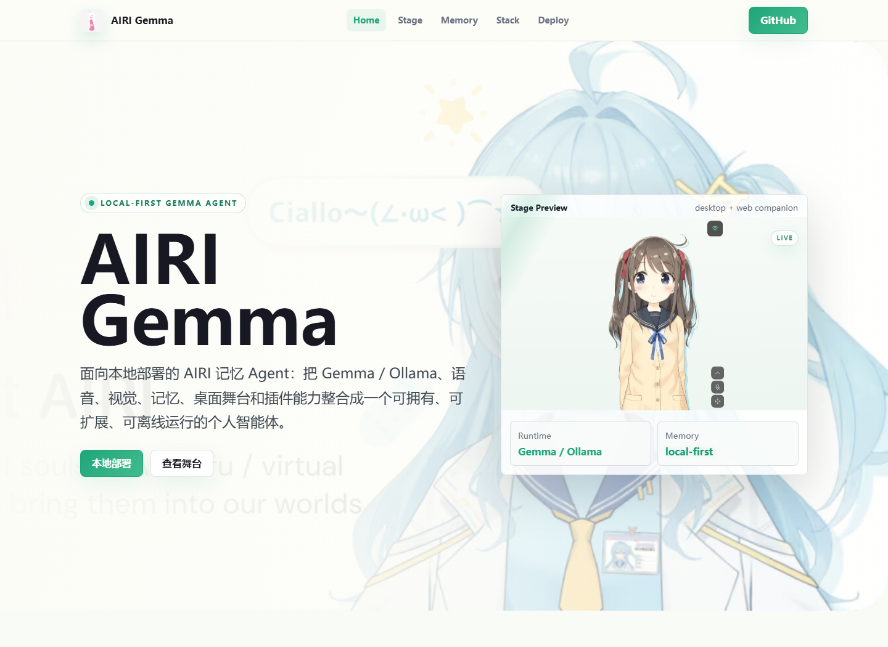
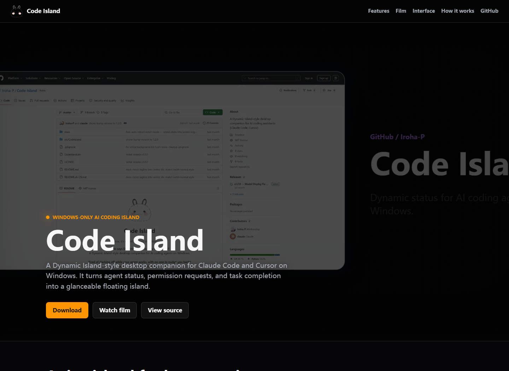
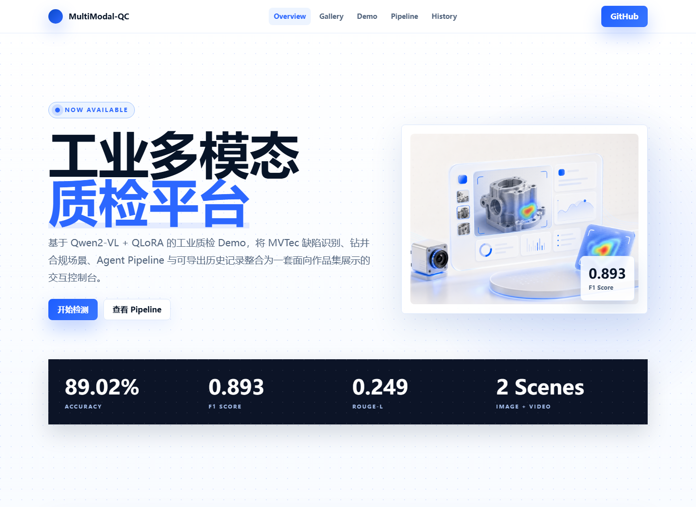
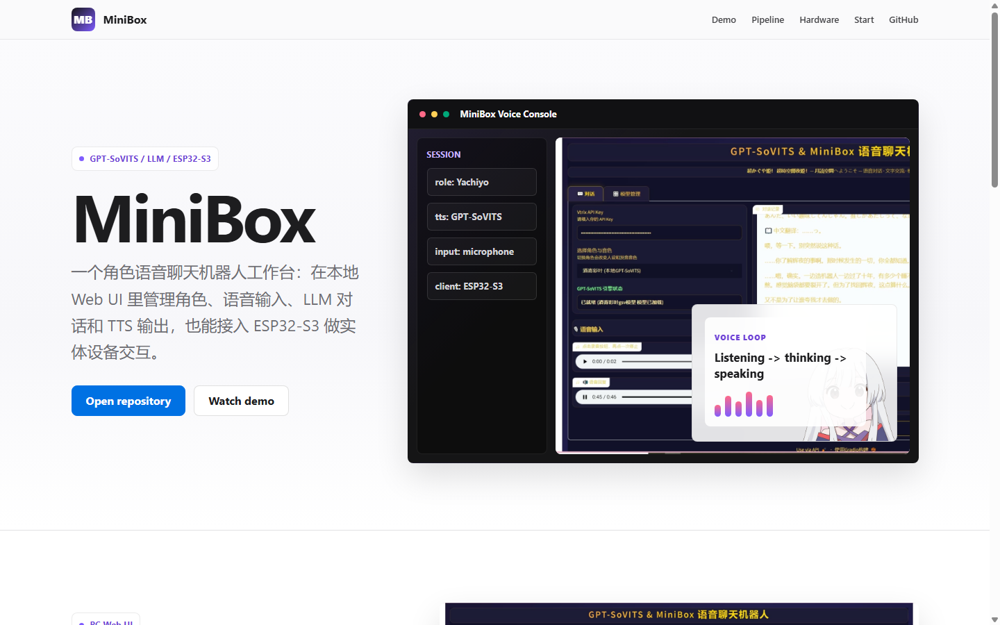

01

这里是 Iroha-P 的 GitHub 项目总入口：从动态岛式桌面伴随工具、OpenAI 生图工作台，到工业多模态质检 Demo 与 AIRI 长期记忆智能体。重点项目都配有可访问的 GitHub Pages 展示页。
这些项目已经有独立展示页，是对外介绍时最适合优先打开的作品。每张卡片保留实机截图，让访问者能先看到真实界面，再进入项目详情。





按用途整理公开项目。私有仓库不会在这个公开主页展示，适合作为 GitHub Profile 和作品集导航页使用。